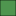

<!doctype html>
<html lang="en">
    <head>
        <meta charset="utf-8">
        <meta http-equiv="X-UA-Compatible" content="IE=edge">
        <meta name="viewport" content="initial-scale=1,user-scalable=no,maximum-scale=1,width=device-width">
        <meta name="mobile-web-app-capable" content="yes">
        <meta name="apple-mobile-web-app-capable" content="yes">
        <link rel="stylesheet" href="css/leaflet.css">
        <link rel="stylesheet" href="css/qgis2web.css"><link rel="stylesheet" href="css/fontawesome-all.min.css">
        <style>
        html, body, #map {
            width: 100%;
            height: 100%;
            padding: 0;
            margin: 0;
        }
        </style>
        <title></title>
    </head>
    <body>
        <div id="map">
        </div>
        <script src="js/qgis2web_expressions.js"></script>
        <script src="js/leaflet.js"></script>
        <script src="js/leaflet.rotatedMarker.js"></script>
        <script src="js/leaflet.pattern.js"></script>
        <script src="js/leaflet-hash.js"></script>
        <script src="js/Autolinker.min.js"></script>
        <script src="js/rbush.min.js"></script>
        <script src="js/labelgun.min.js"></script>
        <script src="js/labels.js"></script>
        <script src="data/LanaodelNorte_1.js"></script>
        <script src="data/R10ILI0177212_2.js"></script>
        <script src="data/geotag_3.js"></script>
        <script>
        var highlightLayer;
        function highlightFeature(e) {
            highlightLayer = e.target;
            highlightLayer.openPopup();
        }
        var map = L.map('map', {
            zoomControl:true, maxZoom:28, minZoom:1
        }).fitBounds([[7.989077508944057,124.15050072973617],[8.3786975061441,124.68561791887308]]);
        var hash = new L.Hash(map);
        map.attributionControl.setPrefix('<a href="https://github.com/tomchadwin/qgis2web" target="_blank">qgis2web</a> &middot; <a href="https://leafletjs.com" title="A JS library for interactive maps">Leaflet</a> &middot; <a href="https://qgis.org">QGIS</a>');
        var autolinker = new Autolinker({truncate: {length: 30, location: 'smart'}});
        var bounds_group = new L.featureGroup([]);
        function setBounds() {
        }
        map.createPane('pane_GoogleTerrainHybrid_0');
        map.getPane('pane_GoogleTerrainHybrid_0').style.zIndex = 400;
        var layer_GoogleTerrainHybrid_0 = L.tileLayer('https://mt1.google.com/vt/lyrs=p&x={x}&y={y}&z={z}', {
            pane: 'pane_GoogleTerrainHybrid_0',
            opacity: 1.0,
            attribution: '',
            minZoom: 1,
            maxZoom: 28,
        });
        layer_GoogleTerrainHybrid_0;
        map.addLayer(layer_GoogleTerrainHybrid_0);
        function pop_LanaodelNorte_1(feature, layer) {
            layer.on({
                mouseout: function(e) {
                    if (typeof layer.closePopup == 'function') {
                        layer.closePopup();
                    } else {
                        layer.eachLayer(function(feature){
                            feature.closePopup()
                        });
                    }
                },
                mouseover: highlightFeature,
            });
            var popupContent = '<table>\
                    <tr>\
                        <td colspan="2">' + (feature.properties['ID_0'] !== null ? autolinker.link(feature.properties['ID_0'].toLocaleString()) : '') + '</td>\
                    </tr>\
                    <tr>\
                        <td colspan="2">' + (feature.properties['ISO'] !== null ? autolinker.link(feature.properties['ISO'].toLocaleString()) : '') + '</td>\
                    </tr>\
                    <tr>\
                        <td colspan="2">' + (feature.properties['NAME_0'] !== null ? autolinker.link(feature.properties['NAME_0'].toLocaleString()) : '') + '</td>\
                    </tr>\
                    <tr>\
                        <td colspan="2">' + (feature.properties['ID_1'] !== null ? autolinker.link(feature.properties['ID_1'].toLocaleString()) : '') + '</td>\
                    </tr>\
                    <tr>\
                        <td colspan="2">' + (feature.properties['NAME_1'] !== null ? autolinker.link(feature.properties['NAME_1'].toLocaleString()) : '') + '</td>\
                    </tr>\
                    <tr>\
                        <td colspan="2">' + (feature.properties['ID_2'] !== null ? autolinker.link(feature.properties['ID_2'].toLocaleString()) : '') + '</td>\
                    </tr>\
                    <tr>\
                        <td colspan="2">' + (feature.properties['NAME_2'] !== null ? autolinker.link(feature.properties['NAME_2'].toLocaleString()) : '') + '</td>\
                    </tr>\
                    <tr>\
                        <td colspan="2">' + (feature.properties['ID_3'] !== null ? autolinker.link(feature.properties['ID_3'].toLocaleString()) : '') + '</td>\
                    </tr>\
                    <tr>\
                        <td colspan="2">' + (feature.properties['NAME_3'] !== null ? autolinker.link(feature.properties['NAME_3'].toLocaleString()) : '') + '</td>\
                    </tr>\
                    <tr>\
                        <td colspan="2">' + (feature.properties['NL_NAME_3'] !== null ? autolinker.link(feature.properties['NL_NAME_3'].toLocaleString()) : '') + '</td>\
                    </tr>\
                    <tr>\
                        <td colspan="2">' + (feature.properties['VARNAME_3'] !== null ? autolinker.link(feature.properties['VARNAME_3'].toLocaleString()) : '') + '</td>\
                    </tr>\
                    <tr>\
                        <td colspan="2">' + (feature.properties['TYPE_3'] !== null ? autolinker.link(feature.properties['TYPE_3'].toLocaleString()) : '') + '</td>\
                    </tr>\
                    <tr>\
                        <td colspan="2">' + (feature.properties['ENGTYPE_3'] !== null ? autolinker.link(feature.properties['ENGTYPE_3'].toLocaleString()) : '') + '</td>\
                    </tr>\
                    <tr>\
                        <td colspan="2">' + (feature.properties['PROVINCE'] !== null ? autolinker.link(feature.properties['PROVINCE'].toLocaleString()) : '') + '</td>\
                    </tr>\
                    <tr>\
                        <td colspan="2">' + (feature.properties['REGION'] !== null ? autolinker.link(feature.properties['REGION'].toLocaleString()) : '') + '</td>\
                    </tr>\
                </table>';
            layer.bindPopup(popupContent, {maxHeight: 400});
        }

        function style_LanaodelNorte_1_0() {
            return {
                pane: 'pane_LanaodelNorte_1',
                opacity: 1,
                color: 'rgba(0,0,0,1.0)',
                dashArray: '',
                lineCap: 'butt',
                lineJoin: 'miter',
                weight: 1.0, 
                fill: true,
                fillOpacity: 1,
                fillColor: 'rgba(0,100,0,1.0)',
                interactive: true,
            }
        }
        map.createPane('pane_LanaodelNorte_1');
        map.getPane('pane_LanaodelNorte_1').style.zIndex = 401;
        map.getPane('pane_LanaodelNorte_1').style['mix-blend-mode'] = 'normal';
        var layer_LanaodelNorte_1 = new L.geoJson(json_LanaodelNorte_1, {
            attribution: '',
            interactive: true,
            dataVar: 'json_LanaodelNorte_1',
            layerName: 'layer_LanaodelNorte_1',
            pane: 'pane_LanaodelNorte_1',
            onEachFeature: pop_LanaodelNorte_1,
            style: style_LanaodelNorte_1_0,
        });
        bounds_group.addLayer(layer_LanaodelNorte_1);
        map.addLayer(layer_LanaodelNorte_1);
        function pop_R10ILI0177212_2(feature, layer) {
            layer.on({
                mouseout: function(e) {
                    if (typeof layer.closePopup == 'function') {
                        layer.closePopup();
                    } else {
                        layer.eachLayer(function(feature){
                            feature.closePopup()
                        });
                    }
                },
                mouseover: highlightFeature,
            });
            var popupContent = '<table>\
                    <tr>\
                        <td colspan="2">' + (feature.properties['ID'] !== null ? autolinker.link(feature.properties['ID'].toLocaleString()) : '') + '</td>\
                    </tr>\
                    <tr>\
                        <td colspan="2"><strong>name</strong><br />' + (feature.properties['name'] !== null ? autolinker.link(feature.properties['name'].toLocaleString()) : '') + '</td>\
                    </tr>\
                </table>';
            layer.bindPopup(popupContent, {maxHeight: 400});
        }

        function style_R10ILI0177212_2_0() {
            return {
                pane: 'pane_R10ILI0177212_2',
                opacity: 1,
                color: 'rgba(215,25,28,1.0)',
                dashArray: '',
                lineCap: 'square',
                lineJoin: 'bevel',
                weight: 5.0,
                fillOpacity: 0,
                interactive: true,
            }
        }
        map.createPane('pane_R10ILI0177212_2');
        map.getPane('pane_R10ILI0177212_2').style.zIndex = 402;
        map.getPane('pane_R10ILI0177212_2').style['mix-blend-mode'] = 'normal';
        var layer_R10ILI0177212_2 = new L.geoJson(json_R10ILI0177212_2, {
            attribution: '',
            interactive: true,
            dataVar: 'json_R10ILI0177212_2',
            layerName: 'layer_R10ILI0177212_2',
            pane: 'pane_R10ILI0177212_2',
            onEachFeature: pop_R10ILI0177212_2,
            style: style_R10ILI0177212_2_0,
        });
        bounds_group.addLayer(layer_R10ILI0177212_2);
        map.addLayer(layer_R10ILI0177212_2);
        function pop_geotag_3(feature, layer) {
            layer.on({
                mouseout: function(e) {
                    if (typeof layer.closePopup == 'function') {
                        layer.closePopup();
                    } else {
                        layer.eachLayer(function(feature){
                            feature.closePopup()
                        });
                    }
                },
                mouseover: highlightFeature,
            });
            var popupContent = '<table>\
                    <tr>\
                        <th scope="row">name</th>\
                        <td>' + (feature.properties['name'] !== null ? autolinker.link(feature.properties['name'].toLocaleString()) : '') + '</td>\
                    </tr>\
                    <tr>\
                        <td colspan="2">' + (feature.properties['Limunsudan'] !== null ? '' : '') + '</td>\
                    </tr>\
                </table>';
            layer.bindPopup(popupContent, {maxHeight: 400});
        }

        function style_geotag_3_0() {
            return {
                pane: 'pane_geotag_3',
                radius: 4.0,
                opacity: 1,
                color: 'rgba(35,35,35,1.0)',
                dashArray: '',
                lineCap: 'butt',
                lineJoin: 'miter',
                weight: 1,
                fill: true,
                fillOpacity: 1,
                fillColor: 'rgba(231,113,72,1.0)',
                interactive: true,
            }
        }
        map.createPane('pane_geotag_3');
        map.getPane('pane_geotag_3').style.zIndex = 403;
        map.getPane('pane_geotag_3').style['mix-blend-mode'] = 'normal';
        var layer_geotag_3 = new L.geoJson(json_geotag_3, {
            attribution: '',
            interactive: true,
            dataVar: 'json_geotag_3',
            layerName: 'layer_geotag_3',
            pane: 'pane_geotag_3',
            onEachFeature: pop_geotag_3,
            pointToLayer: function (feature, latlng) {
                var context = {
                    feature: feature,
                    variables: {}
                };
                return L.circleMarker(latlng, style_geotag_3_0(feature));
            },
        });
        bounds_group.addLayer(layer_geotag_3);
        map.addLayer(layer_geotag_3);
        var baseMaps = {};
        L.control.layers(baseMaps,{' geotag': layer_geotag_3,' R10-ILI-0177-212': layer_R10ILI0177212_2,' Lanao del Norte': layer_LanaodelNorte_1,"Google Terrain Hybrid": layer_GoogleTerrainHybrid_0,},{collapsed:false}).addTo(map);
        map.on("zoomend", function(){

                if (map.hasLayer(layer_R10ILI0177212_2)) {
                    if (map.getZoom() <= 19 && map.getZoom() >= 19) {
                        layer_R10ILI0177212_2.eachLayer(function (layer) {
                            layer.openTooltip();
                        });
                    } else {
                        layer_R10ILI0177212_2.eachLayer(function (layer) {
                            layer.closeTooltip();
                        });
                    }
                }
        });
        setBounds();
        var i = 0;
        layer_LanaodelNorte_1.eachLayer(function(layer) {
            var context = {
                feature: layer.feature,
                variables: {}
            };
            layer.bindTooltip((layer.feature.properties['NAME_3'] !== null?String('<div style="color: #000000; font-size: 3pt; font-family: \'Arial\', sans-serif;">' + layer.feature.properties['NAME_3']) + '</div>':''), {permanent: true, offset: [-0, -16], className: 'css_LanaodelNorte_1'});
            labels.push(layer);
            totalMarkers += 1;
              layer.added = true;
              addLabel(layer, i);
              i++;
        });
        var i = 0;
        layer_R10ILI0177212_2.eachLayer(function(layer) {
            var context = {
                feature: layer.feature,
                variables: {}
            };
            layer.bindTooltip((layer.feature.properties['name'] !== null?String('<div style="color: #000000; font-size: 13pt; font-weight: bold; font-family: \'Arial\', sans-serif;">' + layer.feature.properties['name']) + '</div>':''), {permanent: true, offset: [-0, -16], className: 'css_R10ILI0177212_2'});
            labels.push(layer);
            totalMarkers += 1;
              layer.added = true;
              addLabel(layer, i);
              i++;
        });
                if (map.hasLayer(layer_R10ILI0177212_2)) {
                    if (map.getZoom() <= 19 && map.getZoom() >= 19) {
                        layer_R10ILI0177212_2.eachLayer(function (layer) {
                            layer.openTooltip();
                        });
                    } else {
                        layer_R10ILI0177212_2.eachLayer(function (layer) {
                            layer.closeTooltip();
                        });
                    }
                }
        resetLabels([layer_LanaodelNorte_1,layer_R10ILI0177212_2]);
        map.on("zoomend", function(){
            resetLabels([layer_LanaodelNorte_1,layer_R10ILI0177212_2]);
        });
        map.on("layeradd", function(){
            resetLabels([layer_LanaodelNorte_1,layer_R10ILI0177212_2]);
        });
        map.on("layerremove", function(){
            resetLabels([layer_LanaodelNorte_1,layer_R10ILI0177212_2]);
        });
        </script>
    </body>
</html>
